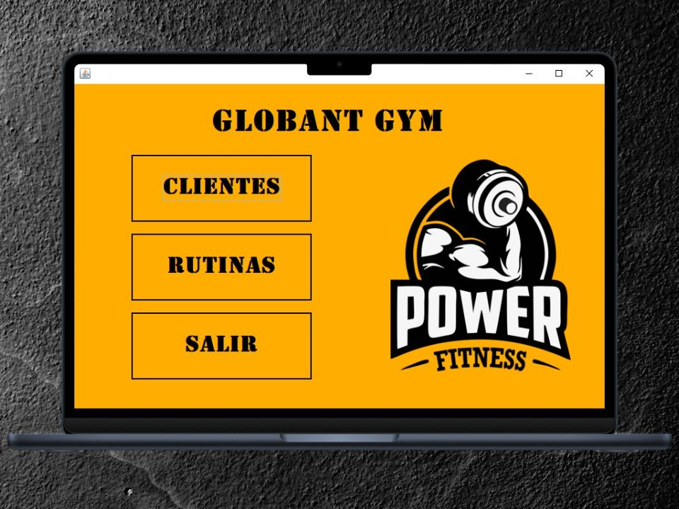

Proyecto Gimnasio Java CRUD
Práctica para un sistema de gestión de clientes de un gimnasio, implementado en Java. Proporciona funcionalidades básicas de un CRUD (Crear, Leer, Actualizar, Eliminar) a través de una interfaz gráfica. El proyecto está desarrollado completamente en Java. Se utiliza la biblioteca Swing para la creación de la interfaz gráfica de usuario. En lugar de utilizar una base de datos, los datos de los clientes se almacenan en un arreglo durante la ejecución del programa.
Repositorio del proyecto
